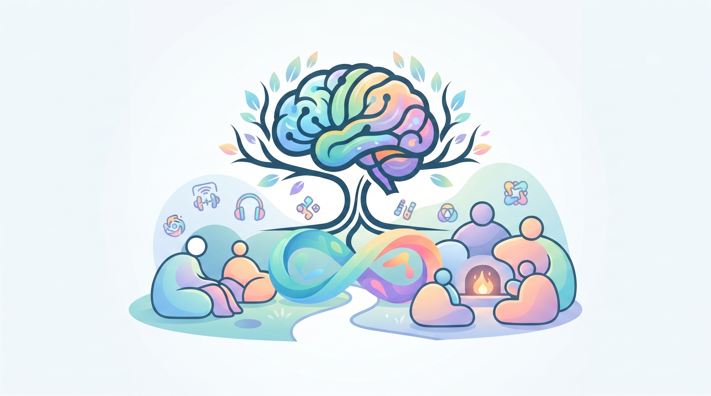

Sobre Nosotros
Bienvenidos a nuestro espacio. Nacimos con el propósito fundamental de ofrecer un refugio seguro y herramientas de apoyo sensorial pensadas desde y para la comunidad neurodivergente. Sabemos que el entorno cotidiano puede presentar desafíos de sobrecarga, por lo que cada artículo de nuestro catálogo es seleccionado cuidadosamente para promover la calma, la regulación y el bienestar diario.
Nuestro compromiso es visibilizar las necesidades de procesamiento sensorial, ofreciendo productos funcionales, discretos y de alta calidad que respeten la neurodiversidad en todas sus formas.
Nuestros Valores
- Empatía y Respeto: Entendemos y validamos las distintas formas de experimentar el mundo.
- Accesibilidad Visual: Diseñamos pensando en la reducción de la fatiga sensorial (paletas pasteles y entornos amigables).
- Calidad y Seguridad: Artículos confiables y seguros para el uso cotidiano y la autorregulación.
